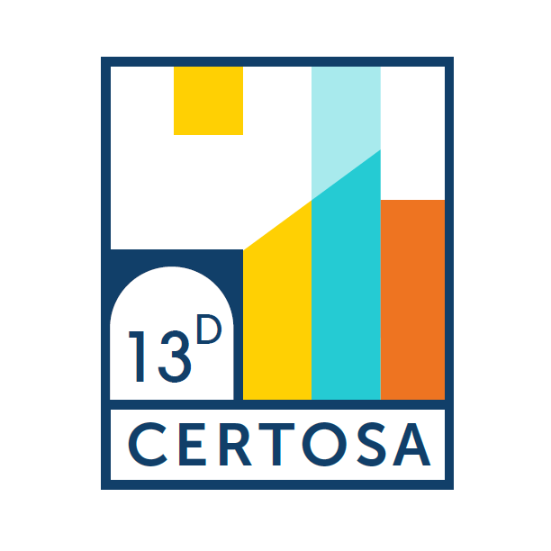
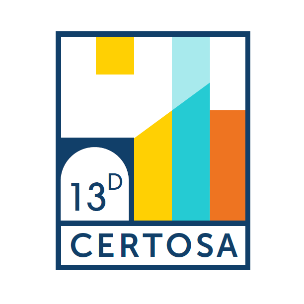

Musica D'Ottone
Concerto dei Gomalan Brass Quintet assieme alla Banda Musicale di Pontedecimo
Ore 21:00 al Chiostro di San Bartolomeo della Certosa
J. Van der Roost - Flashing Wind
Banda Musicale
G. Gabrieli - Canzone per suonare n.2
Quintetto
G. Puccini - Nessun Dorma
Quintetto
G. Verdi - Marcia trionfale da “Aida”
Quintetto
Arr. De Meji/Pierobon - Moment for Morricone
Quintetto e Banda Musicale
Intervallo
Paganini/Short - Moto Perpetuo
Quintetto
M. Taylor - Brass Machine
Quintetto e Banda Musicale
S. Verhelst - Song for Japan
Quintetto e Banda Musicale
M. Ottolini - Buster Keaton blues
Quintetto
AAVV Lupin III - arr. M. Pierobon
Quintetto
Q. Jones/Pierobon - Soul Bossa
Quintetto
A. Silvestri - Forrest Gump
Quintetto e Banda Musicale
 
